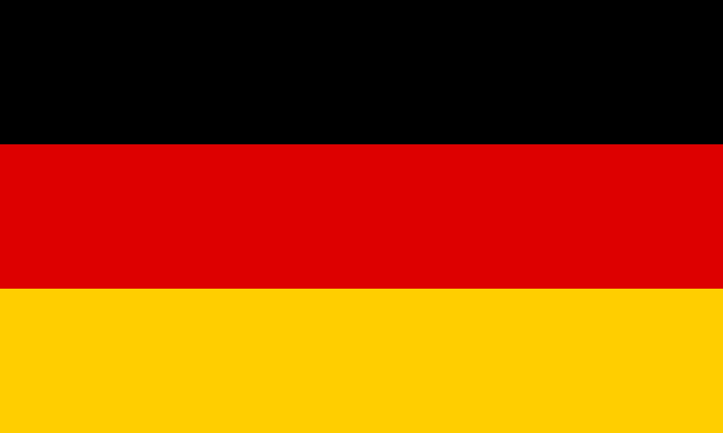
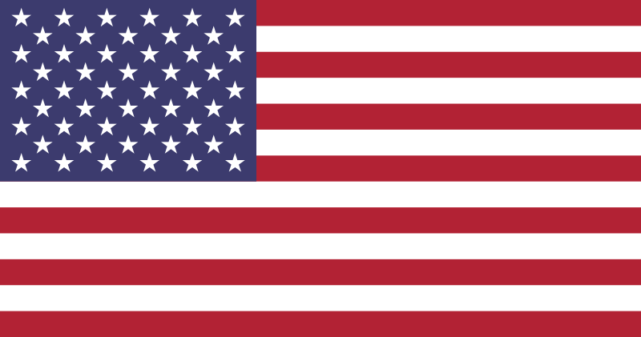
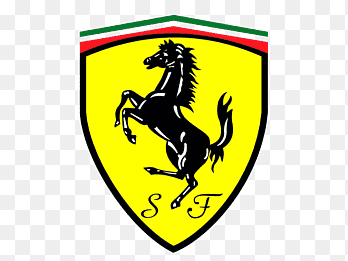

Campeonato Mundial de Fórmula 1 2023 - FIA
| SISTEMA DE PONTUAÇÃO UTILIZADO |
| 1º - 25 pontos |
| 2º - 18 pontos |
| 3º - 15 pontos |
| 4º - 12 pontos |
| 5º - 10 pontos |
| 6º - 8 pontos |
| 7º - 6 pontos |
| 8º - 4 pontos |
| 9º - 2 pontos |
| 10º - 1 ponto |
| PONTUAÇÃO DOS COMPETIDORES | |
| Max Verstappen | 68 pontos |
| Sérgio Perez | 53 pontos |
Fernando Alonso  |
45 pontos |
| Lewis Hamilton | 38 pontos |
| Carlos Sainz Jr. |
20 pontos |
Lance Stroll  |
20 pontos |
| George Russel | 18 pontos |
| Lando Norris | 8 pontos |
Charles Leclerc  |
6 pontos |
| Nico Hulkenberg  | 6 pontos |
Esteban Ocon  |
4 pontos |
Oscar Piastri  |
4 pontos |
| Valtteri Bottas | 4 pontos |
| Pierre Gasly |
2 Pontos |
| Guanyu Zhou | 2 pontos |
Alexander Albon  |
1 ponto |
Kevin Magnussen  |
1 ponto |
| Yuki Tsunoda | 1 ponto |
| Logan Sargeant  | 0 pontos |
| Nyck de Vries | 0 pontos |
| GP Bahrein |
| 1 - Max Verstappen - 25 pontos |
| 2 - Sérgio Perez - 18 pontos |
| 3 -Fernando Alonso - 15 pontos |
| 4 - Carlos Sainz Jr. - 12 pontos |
| 5 - Lewis Hamilton - 10 pontos |
| 6 - Lance Stroll - 8 pontos |
| 7 - George Russel - 6 pontos |
| 8 - Valtteri Bottas - 4 pontos |
| 9 - Pierre Gasly - 2 pontos |
| 10 - Alexander Albon - 1 ponto |
| GP Arábia Saudita |
| 1 - Sérgio Perez - 25 pontos |
| 2 - Max Verstappen - 18 pontos |
| 3 - Fernando Alonso - 15 pontos |
| 4 - George Russel - 12 pontos |
| 5 - Lewis Hamilton - 10 pontos |
| 6 - Carlos Sainz Jr. - 8 pontos |
| 7 - Charles Leclerc - 6 pontos |
| 8 - Esteban Ocon - 4 pontos |
| 9 - Pierre Gasly - 2 pontos |
| 10 - Kevin Magnussen - 1 ponto |
| GP Australia |
| 1 - Max Verstappen - 25 pontos |
| 2 - Lewis Hamilton - 18 pontos |
| 3 - Fernando Alonso - 15 pontos |
| 4 -Lance Stroll - 12 pontos |
| 5 - Sergio Perez - 10 pontos |
| 6 - Lando Norris - 8 pontos |
| 7 - Nico Hulkenberg - 6 pontos |
| 8 - Oscar Piastri - 4 pontos |
| 9 - Guanyu Zhou - 2 pontos |
| 10 - Yuki Tsunoda - 1 ponto |
| PONTUAÇÃO DAS EQUIPES | ||||
| Equipe | GP Bahrein | GP Arábia Saudita | GP Austrália | Total |
| 1 - RBR / Honda | 42 pontos | 42 pontos | 35 pontos | 119 pontos |
| 2 - Aston Martin / Mercedes | 23 pontos | 15 pontos | 27 pontos | 65 pontos |
3 - Mercedes  |
16 pontos | 22 pontos | 18 pontos | 56 pontos |
| 4 - Ferrari  | 12 pontos | 14 pontos | 0 pontos | 26 pontos |
| 5 - McLaren / Mercedes | 0 pontos | 0 pontos | 12 pontos | 12 pontos |
6 - Alpine / Renault  |
2 pontos | 6 pontos | 0 pontos | 8 pontos |
7 - Haas / Ferrari  |
0 pontos | 1 ponto | 6 pontos | 7 pontos |
8 - Alfa Romeo / Ferrari  |
4 pontos | 0 pontos | 2 pontos | 6 pontos |
| EMPATE - AlphaTauri / Honda | 0 pontos | 0 pontos | 1 ponto | 1 ponto |
| EMPATE - Williams / Mercedes | 1 ponto | 0 pontos | 0 pontos | 1 ponto |
Max Verstappen - RBR/Honda
Sergio Pérez - RBR/Honda
Fernando Alonso - Aston Martin/Mercedes
Lance Stroll - Aston Martin/Mercedes
Lewis Hamilton - Mercedes
George Russell - Mercedes
Carlos Sainz Jr. - Ferrari
Charles Leclerc - Ferrari
Oscar Piastri - McLaren/Mercedes
Lando Norris - McLaren/Mercedes
Nico Hulkenberg - Haas/Ferrari
Kevin Magnussen - Haas/Ferrari
Valtteri Botas Alfa - Alfa Romeo/Ferrari
Guanyu Zhou Alfa - Alfa Romeo/Ferrari
Esteban Ocon - Alpine/Renault
Pierre Gasly - Alpine/Renault
Yuki Tsunoda - AlphaTauri/Honda
Nyck de Vries - AlphaTauri/Honda
Alexander Albon - Williams/Mercedes
Logan Sargeant - Williams/Mercedes